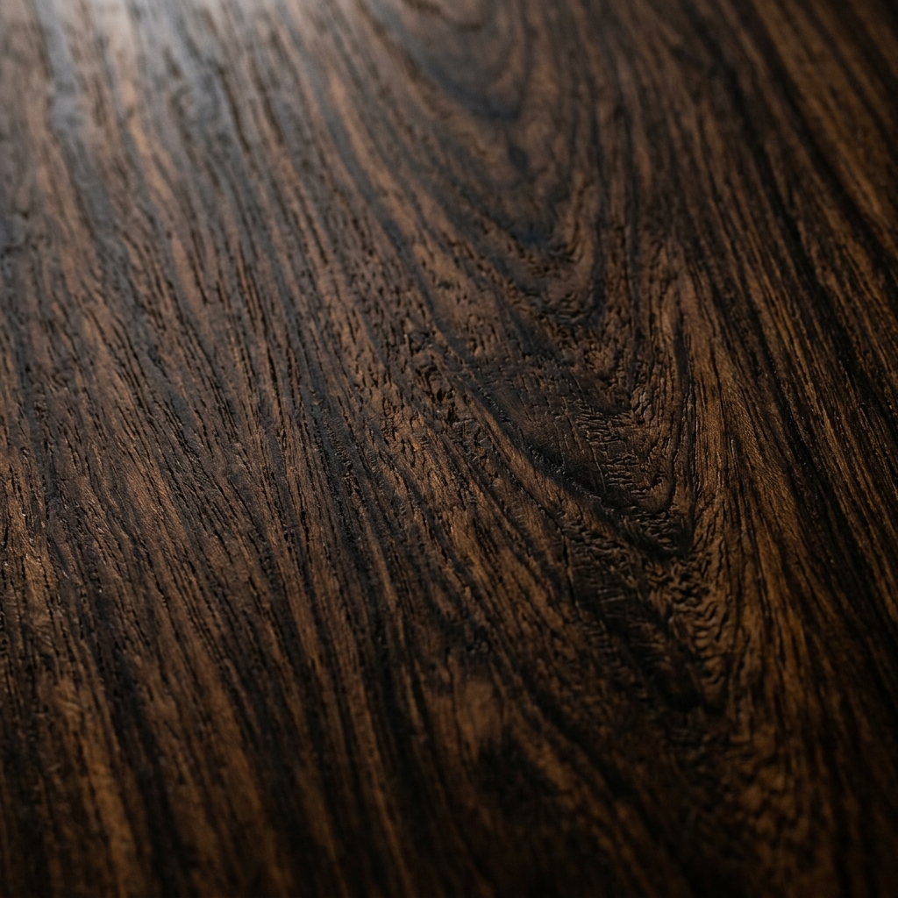

Anatomy of a Build
It takes approximately 120 hours to build a FRET instrument. Discover the meticulous steps that transform raw timber into a resonant voice.
The Tonewood Vault
Everything begins with the wood. We ethically source and naturally air-dry our materials for years before they ever touch a saw blade.
Watch the Process
Specialized Build Techniques
Every FRET instrument benefits from centuries-old techniques refined with modern precision. These are the methods that set our instruments apart.
Tap-Tuning & Voicing
Each soundboard is tuned by hand to a target frequency by removing material from the braces. This process, called "voicing," determines the instrument's fundamental character — whether it's a cannon or a whisper.
Hand-Scalloped Bracing
Rather than using CNC-routed braces, every brace is hand-scalloped using finger planes and chisels. This allows the luthier to respond to each piece of wood's unique characteristics and optimize vibration transfer.
Hand-Carved Neck Profiles
Every neck is shaped by hand using spoke shaves, rasps, and scrapers. This creates an organic, flowing taper that machine-produced necks simply cannot replicate — the neck feels like an extension of your hand.
Guitar Care & Maintenance Tips
Proper care extends the life of your instrument and keeps it playing and sounding its best. Here are the essentials every player should know.
Humidity Control
Wood breathes. Keep your instrument at 45–55% relative humidity to prevent cracking and warping.
Cleaning & Polish
Wipe your strings and body after each session. A simple microfiber cloth removes oils that corrode strings and dull finishes.
Regular String Changes
Dead strings sound dull and can develop rough spots that wear frets faster. Change strings every 30–60 hours of play.
Proper Storage
Always store your instrument in a hardshell case when not playing. Avoid attics, basements, and car trunks — temperature extremes are the enemy.
Seasonal Setup Checks
Wood moves with humidity changes. A bi-annual professional setup keeps your action, relief, and intonation dialed in year-round.
Fretboard Conditioning
Unfinished rosewood and ebony fretboards need conditioning oil 1–2 times per year to prevent drying, shrinkage, and sharp fret ends.
Ready to start your build?
Our commission waitlist is currently open. Contact us to schedule an initial consultation and begin designing your bespoke instrument.
Contact the Atelier